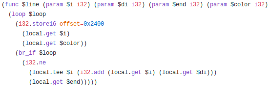
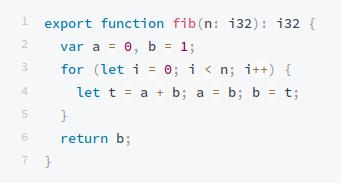
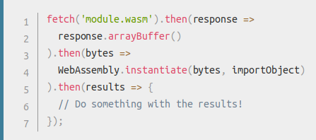
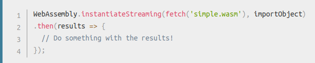

Rust and WebAssembly
MozMeetup Lima 07-2019
mozillaperuwho I am?

a global community of people who believe that openness, innovation, and opportunity are key to the continued health of the Internet.
rust + wasm

wasm
binary format for a virtual machine that can run on web , but not designed strictly for web
why

would replace js?
wasm <3 js
how it works

Not only C | C++ | Rust
wat
Assembly Script

rust compiling to wasm
rustc src/main.rs --target=wasm32-unknown-unknown
using in js
 other web api interfaces

more easy interactions between wasm modules and js
wasm workflow tool!

binary toolkit

WASI
API for use outside web
WASMER
Universal WebAssembly runtime
WAPM
wasm package manager